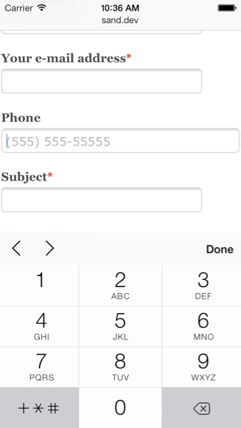
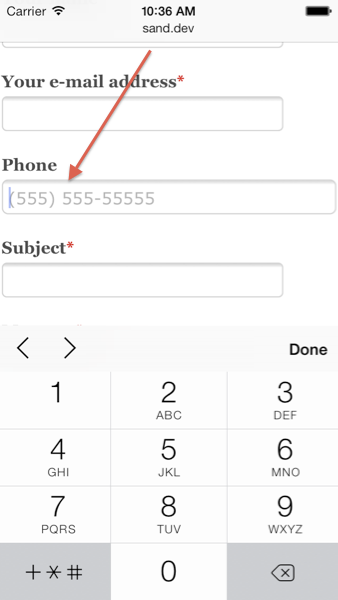

Build a Blog with Drupal 8 on the Day it's Released
By: Bob Kepford
Bob Kepford
Senior Drupal Developer
@kepford

We help organizations build highly impactful, elegantly designed Drupal websites that achieve the strategic results you need.
Digital Strategy
- Content Strategy
- Content Generation
- Result Metrics
- Marketing Automation Integration
Design/Theming
- Usability Testing
- Responsive Design
- Drupal Theming
- Annotated Wireframes
Development
- Drupal Support
- Custom Module Development
- Large Scale Systems Integration
- Security & Performance Expertise
Drupal 8: What's New
- New Fields
- HTML 5
- Better Content Editing
- Display & Form Modes
- Mobile
- Views
- Tour
- Accessibility
- Better Multi-language support
- CMI
- Web Services
HTML5
New Stuff!
Picture element
Support for responsive image displays

Accessible text
Date element

E-mail & Phone Elements
Placeholder Attribute
Fields
- Comments are now fields
- Entity Reference Field
- Link Field
- Email Field
- Telephone Field
Content Editing
- WYSIWYG out of the box! (CKEditor)
- Insert inline images (with captions)
- In-place editing
- Improved publishing UX including Drafts!
WYSIWYG
In-place editing
Form & Field Display Changes
View (Display) Modes
- Create and manage view modes for all entities
- Includes form modes and view modes
- Replaces Entity view modes module
Mobile
- Responsive themes, images, and tables
- Admin theme is mobile friendly
- Mobile toolbar
- Overlay is gone!

Views
Views in Core!
- Most listings in core are now Views
- JSON Feeds
- The same Views you know and love

Improvements to Blocks
- More hard-coded blocks are configurable.
- One block can be placed in more than one region!
- Custom block types
Tour!
Easily create tours for your site.
Configuration API
Full Export/Import
YAML

You Can Build Full Featured Sites with Drupal Core Alone
- New Fields
- HTML 5
- Better Content Editing
- Display & Form Modes
- Mobile
- Views
- Tour
- Accessibility
- Better Multi-language support
- CMI
- Web Services
Resources
Thank You
Please evaluate this session http://wdrp.us/dcaustin
@Mediacurrent
Mediacurrent.com